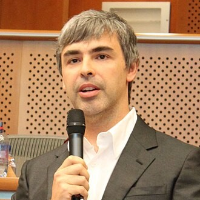
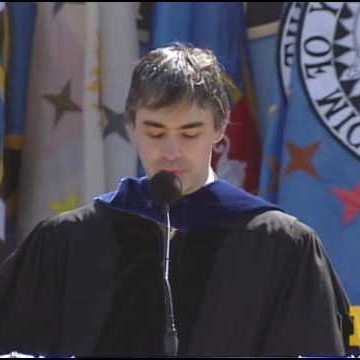
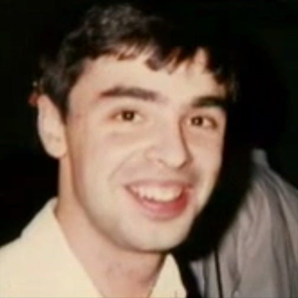
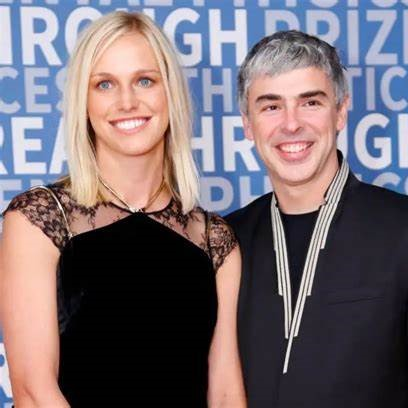
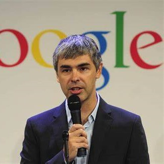

persistence
Your way to greatnnes
This website shows you how to become great and successfull
introduction
Lawrence Edward Page (born March 26, 1973) is an American businessman and computer scientist best known for co-founding Google with Sergey Brin.Page was chief executive officer of Google from 1997 until August 2001 when he stepped down in favor of Eric Schmidt, and then again from April 2011 until July 2015 when he became CEO of its newly formed parent organization Alphabet Inc. He held that post until December 4, 2019, when he and Brin stepped down from all executive positions and day-to-day roles within the company. He remains an Alphabet board member, employee, and controlling shareholder.Page is the co-creator and namesake of PageRank, a search ranking algorithm for Google for which he received the Marconi Prize in 2004 along with co-writer Brin.

Early life
William Henry Gates was born on October 28, 1955, in Seattle, Washington as the only son of William H. Gates Sr. (1925–2020) and his first wife, Mary Maxwell Gates (1929–1994). His ancestry includes English, German, and Irish/Scots-Irish His father was a prominent lawyer, and his mother served on the board of directors of First Interstate BancSystem and United Way of America. Gates's maternal grandfather J. W. Maxwell was a national bank president. He also has an older sister Kristi (Kristianne) and a younger sister Libby. He is the fourth of his name in his family but is known as William Gates III or "Trey" (i.e., three) because his father had the "II" suffix. The family lived in the Sand Point area of Seattle in a home that was damaged by a rare tornado when Gates was 7. During his childhood, his family regularly attended a church of the Congregational Christian Churches, a Protestant Reformed denomination.Gates was small for his age and was bullied as a child. The family encouraged competition; one visitor reported that "it didn't matter whether it was hearts or pickleball or swimming to the dock; there was always a reward for winning and there was always a penalty for losing".

Education
At age 13, he enrolled in the private Lakeside prep school where he wrote his first software program. When he was in eighth grade, the Mothers' Club at the school used proceeds from Lakeside School's rummage sale to buy a Teletype Model 33 ASR terminal and a block of computer time on a General Electric (GE) computer for the students. Gates took an interest in programming the GE system in BASIC, and he was excused from math classes to pursue his interest. He wrote his first computer program on this machine, an implementation of tic-tac-toe that allowed users to play games against the computer. Gates was fascinated by the machine and how it would always execute software code perfectly. After the Mothers Club donation was exhausted, Gates and other students sought time on systems including DEC PDP minicomputers. One of these systems was a PDP-10 belonging to Computer Center Corporation (CCC) which banned Gates, Paul Allen, Ric Weiland, and Gates's best friend and first business partner Kent Evans for the summer after it caught them exploiting bugs in the operating system to obtain free computer time.At 17, Gates formed a venture with Allen called Traf-O-Data to make traffic counters based on the Intel 8008 processor. In 1972, he served as a congressional page in the House of Representatives. He was a national merit scholar when he graduated from Lakeside School in 1973. He scored 1590 out of 1600 on the Scholastic Aptitude Tests (SAT) and enrolled at Harvard College in the autumn of 1973. He did not stay at Harvard long enough to choose a concentration, but took mathematics (including Math 55) and graduate level computer science courses. While at Harvard, he met fellow student and future Microsoft CEO Steve Ballmer. Gates left Harvard after two years while Ballmer stayed and graduated magna cum laude. Years later, Ballmer succeeded Gates as Microsoft's CEO and maintained that position from 2000 until his resignation in 2014.

Personal life
Gates married Melinda French on the Hawaiian Island of Lānaʻi on January 1, 1994. They met in 1987 after Melinda began working at Microsoft. At the time of their marriage, Gates was given permission by Melinda to spend limited time with his ex-girlfriend, businesswoman Ann Winblad. Bill and Melinda have three children: Jennifer, Rory and Phoebe.[186] The Gates family residence is an earth-sheltered mansion in the side of a hill overlooking Lake Washington in Medina, Washington. In 2009, property taxes on the mansion were reported to be US$1.063 million, on a total assessed value of US$147.5 million. The 66,000-square-foot (6,100 m2) estate has a 60-foot (18 m) swimming pool with an underwater music system, as well as a 2,500-square-foot (230 m2) gym and a 1,000-square-foot (93 m2) dining room. On May 3, 2021, the Gateses announced they had decided to divorce after 27 years of marriage and 34 years as a couple. They said they would keep working together on charitable efforts. The Wall Street Journal reported that Melinda had been meeting with divorce attorneys since 2019, citing interviews that suggested Bill's ties with Jeffrey Epstein was at least one of her concerns.The divorce was finalized on August 2, 2021. Bill and Melinda became grandparents in 2023 after their eldest daughter Jennifer and her husband Nayel Nassar welcomed their first child, a daughter. Also in 2023, Gates was reported to be dating Paula Hurd, the widow of former Oracle Corporation co-CEO Mark Hurd, who died in 2019..

Career
In 1975, he and Allen founded Microsoft in Albuquerque, New Mexico. Gates led the company as its chairman and chief executive officer until stepping down as CEO in January 2000, succeeded by Steve Ballmer, but he remained chairman of the board of directors and became chief software architect. During the late 1990s, he was criticized for his business tactics, which were considered anti-competitive. In June 2008, Gates transitioned into a part-time role at Microsoft and full-time work at the Bill & Melinda Gates Foundation, the private charitable foundation he and his then-wife Melinda had established in 2000. He stepped down as chairman of the Microsoft board in February 2014 and assumed the role of technology adviser to support newly appointed CEO Satya Nadella. In March 2020, Gates left his board positions at Microsoft and Berkshire Hathaway to focus on his philanthropic efforts on climate change, global health and development, and education.

Campanies
He is the founder and chairman of several companies, including BEN, Cascade Investment, TerraPower, Gates Ventures, and Breakthrough Energy. He has donated sizable amounts of money to various charitable organizations and scientific research programs through the Bill & Melinda Gates Foundation, reported to be the world's largest private charity. Through the foundation, he led an early 21st century vaccination campaign that significantly contributed to the eradication of the wild poliovirus in Africa. In 2010, Gates and Warren Buffett founded The Giving Pledge, whereby they and other billionaires pledge to give at least half of their wealth towards philanthropy
